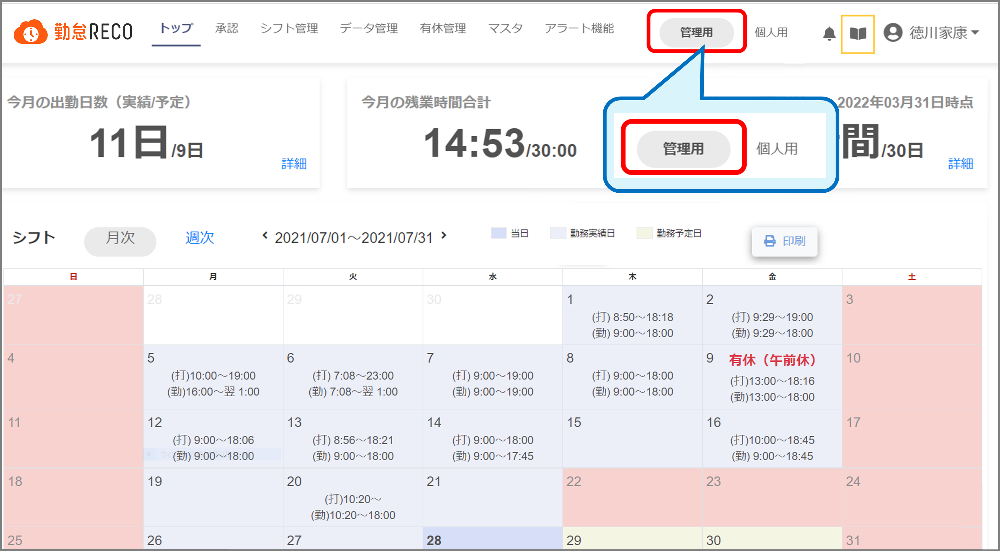

初期設定
勤怠RECOの初期設定は、管理者メニューの［マスタ］メニューから行います。システム管理者権限のアカウントで行ってください。
［管理用］メニューを操作するには、ログイン後、トップページのヘッダーにある［管理用］をクリックしてメニューを切り替えてください。

※一般権限のアカウントではヘッダー部の［管理用］と［個人用］は表示されません。
※権限の変更は「システム管理者」権限のあるアカウントで、従業員マスタにて行ってください。操作方法はこちら。
※アクセス情報シートに記載されているID、パスワードは初期設定用IDです。
初期設定IDは、お客様の同意のもと、SBI ビジネス・ソリューションズ（株）の担当者が使用する場合がございます。
初期設定ID・パスワードを変更することはできません。
設定は以下の順で行ってください。
※は必須設定項目です。
-
勤怠RECO全体に関連する共通ルールを登録します。
-
会社の休日や祝日などをカレンダー形式で登録します。
勤務形態によって休日が異なる場合は、それぞれの形態のカレンダーが必要になります。 -
部署名を登録・変更・削除します。
-
役職名を設定します。
承認経路マスタの設定は、役職マスタが設定されている必要があります。 -
就業規則に沿った勤務形態を設定します。
勤務時間管理のため、勤務形態ごとに勤務時間・勤務時間外などの詳細を設定してください。
-
従業員の基本情報、出勤パターン等を登録・確認・編集・削除します。
-
ICカードで打刻を行う場合は、アプリをインストールし、作成した従業員にICカード情報を登録します。
-
残業や有給休暇のアラート設定を登録します。
-
承認部門と承認者、承認対象申請等を登録します。
-
業務プロジェクトの名称や番号等を設定します。勤怠RECOでプロジェクト別工数を確認する場合は設定が必要です。
-
従業員に対して年間の規定数の有給休暇や特別休暇を付与します。この設定は、管理者メニューの［有休管理］メニューから行います。
-
勤怠RECOで使用するシフトテンプレートを登録します。
勤怠RECOのテンプレ―トを使用する場合、登録は不要です。
-
勤怠RECOに登録されているメニューの詳細を閲覧したり、一部項目を編集したりします（表示順の変更と、有効／無効の変更のみ）。
初期設定は以上です。
■登録用各種データの取り込み（データインポート）
上記1～9の登録に必要な情報が記載されているエクセルデータを勤怠RECOに取り込みます。エクセルデータは勤怠RECOにあるテンプレートを使用して作成できます。勤怠RECOの各マスタメニューでデータを1件ずつ登録する手間を省きます。
「データインポート」は必要に応じてご利用ください。